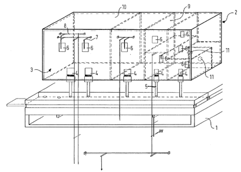

|
Cubus Latin |
|
This name is given to a stop invented by Wolfgang Oberlinger and patented in 1997 by the firm of Oberlinger Orgelbau of Windesheim, Germany. According Oberlinger's web site, it is intended to replace a 16' Subbass, but requires only about 1/7 as much space, about 0.13 cubic meters. The illustration from Oberlinger's patent application is reproduced below (click on it for a larger image), followed by a translation of the patent's abstract.
The sound body (2) is divided by inner walls (9) into chambers (10), where at least one labium (4) and at least one sound flap (6) is applied to each chamber. All labia and sound flaps are arranged on the front side (3) of the sound body. The labia have different widths. At least one part of the inner walls has wind passages (11). Each sound of the sound body is tunable by moving a body in the wind current in its interior via a slider. The sound body has a quadratic, rectangular, round or oval basic shape and the ratio of the length to the width or to the diameter is less than 5:1.
The idea of using one pipe body to produce more than one note did not originate with Oberlinger, nor did the idea of using pipes of cubical or nearly cubical shape. Wedgwood provides the accompanying illustration, and writes:
�Boxes� and �Cubes�, into an orifice in which wind is directed, have from time to time been made. Their tone is apt to be irregular, and ill-defined, and generally unsatisfactory. The author, has, in his possession, however, a Cube of excellent effect, made and voiced by Mr. Compton, the tone of which somewhat resembles that of the same builder's Tibia Mollis. The lip is leathered. Cube basses might be found of great utility, when dealing with situations of some awkwardness.See also Pyramidon.
http://gb.espacenet.com/.
Oberlinger's web site at
http://organisten.de/oberlinger/e-forschung.html#cubus.
|
Original website compiled by Edward L. Stauff. For educational use only. Cubus.html - Last updated 20 May 2002. |
Home Full Index |
{kind=link}